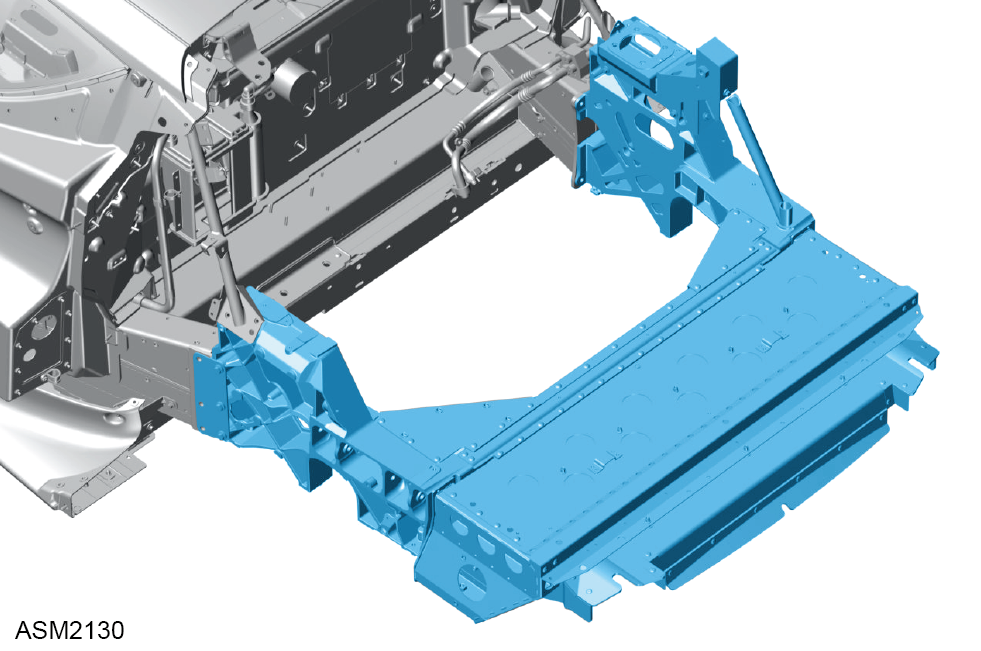

Rear Subframe Assembly - 4 Cylinder
Print
Operation Code: 30.01.02-02
Removal
- Remove engine assembly. Refer to procedure.
- Remove boot box. Refer to procedure.
- Remove fuel filler bowl assembly. Refer to procedure.
- Remove rear hub carrier left side. Refer to procedure.
- Remove rear upper wishbone assembly left side. Refer to procedure.
- Remove rear hub carrier right side.
NOTE: Procedure is the same for left side component.
- Remove rear upper wishbone assembly right side.
NOTE: Procedure is the same for left side component.
- Remove rear anti roll bar. Refer to procedure.
- Release clips (x5) securing body harness to rear subframe.
- Move body harness aside to clear rear subframe.
- Release clips (x3) securing engine ground harness to rear subframe.
- Remove M8x25 bolt securing engine ground harness to rear subframe. Torque 24 Nm.
- Remove engine ground harness.
- Remove M6x25 bolts (x2) securing battery positive cable to rear subframe. Torque 10 Nm.
- Release clips (x6) securing engine bay harness to rear subframe.
- Move engine bay harness aside to clear rear subframe.
- Install suitable lifting table under rear subframe.
- Lower vehicle until rear subframe is supported on lifting table.
- Remove M8x25 bolts (x2) securing back stay frame - left side to rear subframe. Torque 24 Nm.
- Remove M10x30 bolt securing back stay frame - right side to rear subframe. Torque 45 Nm.
- Remove M10x30 bolts (x3) securing rear subframe to underbody assembly. Torque 45 Nm.
- Remove M10x30 bolts (x2) and nuts securing rear subframe to underbody assembly. Torque 45 Nm.
NOTE: Always record quantity and fitted position of washers.
- Remove M10x30 bolts (x3) securing rear subframe to underbody assembly. Torque 45 Nm.
- Remove M10x30 bolts (x2) and nuts securing rear subframe to underbody assembly. Torque 45 Nm.
NOTE: Always record quantity and fitted position of washers.

- Remove rear subframe assembly.
- Remove any shim plates from bottom of rear subframe side rails.
NOTE: Always record quantity and fitted position of shim plates.
- Remove rear subframe adapter shim plates (x2).
Do not carry out further disassembly if removing for access only.
- Remove M8x30 bolts (x3) securing engine mounting bracket to rear subframe. Torque 24 Nm.
- Remove M8x30 bolts (x4) securing engine mounting bracket to rear subframe. Torque 24 Nm.
- Remove engine mounting bracket.
- Remove M6x25 bolts (x17) and washers securing exhaust heatshield to rear subframe. Torque 8 Nm.
- Remove exhaust heatshield.
- Remove M10x30 bolts (x3) securing left side reinforcement bracket to rear subframe. Torque 45 Nm.
- Remove left side reinforcement bracket.
- Remove M10x30 bolts (x3) securing right side reinforcement bracket to rear subframe. Torque 45 Nm.
- Remove right side reinforcement bracket.
Installation
- Installation is the reverse of removal procedure except for the following:
- Trial fit rear subframe assembly using no shim plates.
- Temporarily fit M10x30 bolts and nuts (x4) during trial installation.
- Measure gap between bottom of chassis side rails and subframe horizontal surface.
- Apply duralac anti-corrosion compound to subframe and shim mating surfaces.
- Install shim plates as required.
- Perform a rear suspension geometry inspection and adjustment. Refer to procedure.